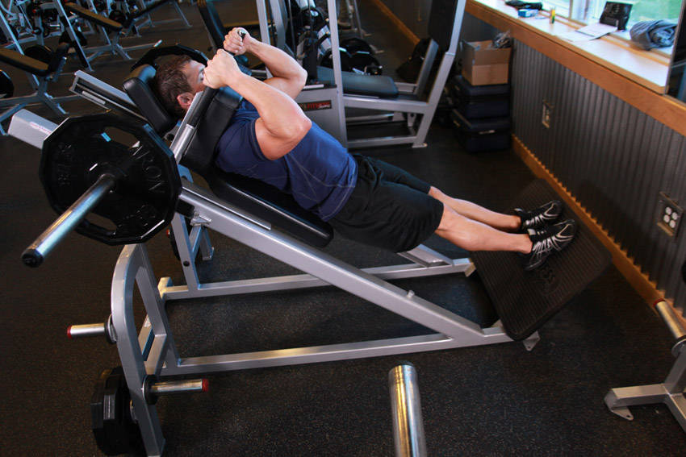

- Place the back of your torso against the back pad of the machine and hook your shoulders under the shoulder pads provided.
- Position your legs in the platform using a less than shoulder width narrow stance with the toes slightly pointed out. Your feet should be around 3 inches or less apart. Tip: Keep your head up at all times and also maintain the back on the pad at all times.
- Place your arms on the side handles of the machine and disengage the safety bars (which on most designs is done by moving the side handles from a facing front position to a diagonal position).
- Now straighten your legs without locking the knees. This will be your starting position.
- Begin to slowly lower the unit by bending the knees as you maintain a straight posture with the head up (back on the pad at all times). Continue down until the angle between the upper leg and the calves becomes slightly less than 90-degrees (which is the point in which the upper legs are below parallel to the floor). Inhale as you perform this portion of the movement.
- Begin to raise the unit as you exhale by pushing the floor with mainly with the heels of your feet as you straighten the legs again and go back to the starting position.
- Repeat for the recommended amount of repetitions.